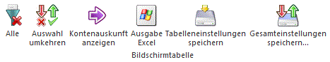
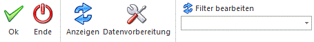
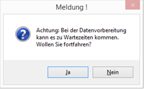

Wenn die Option
Ø Anonymisierung & Löschen
selektiert ist, können Personenkonten aus dem Datenstand gelöscht werden.
Selektion
In diesem Bereich kann entschieden werden, ob ein bestimmtes Konto oder eine Merkliste mit Konten bearbeitet werden soll.
Ø Konto
Wenn diese Checkbox selektiert ist, kann ein bestimmtes Konto für die Anonymisierung und Löschen bearbeitet werden. Das Konto kann im darunterliegenden Feld "Konto" eingetragen bzw. aus dem Konten-Matchcode selektiert werden. Wenn kein Konto hinterlegt wird, werden alle Debitor bzw. Kreditorenkonten (Hauptkonten) mit dem Button "Anzeige" in die Bildschirmtabelle geladen.
Ø Merkliste
Wenn diese Checkbox selektiert ist, können die Konten in einer schon bestehenden Konten-Merkliste für die Anonymisierung und Löschen bearbeitet werden. Die Merkliste kann im darunterliegenden Feld "Konten aus Merkliste" eingetragen bzw. aus dem Merklisten-Matchcode selektiert werden.
Vorbelegung
Ø Sammelkonto
In diesem Feld kann ein Personenkonto als Sammelkonto selektiert werden. Das Konto wird mit Button "Anzeigen" in alle Konten in der Bildschirmtabelle als Sammelkonto übernommen. Das hinterlegte Konto muss die folgenden Voraussetzungen erfüllen:
ü Das Konto muss in allen Wirtschaftsjahren vorhanden sein
ü Das Konto muss ein Personenkonto oder Interessent sein
ü Das Konto muss in allen Wirtschaftsjahren denselben Kontentyp haben
ü Das Konto darf nicht in einem anderen Wirtschaftsjahr als Subkonto definiert sein
Hinweis
Bei Anonymisierung und Löschen werden vorab die Salden des anonymisierten und gelöschten Kontos auf das Sammelkonto umgebucht. Dabei werden auch eventuell eingetragene Hauptbuchkonten berücksichtigt, d.h. ist das Personenkonto ein Nebenbuchkonto, werden auch die Salden des Hauptbuchkontos entsprechend verändert, dasselbe gilt auch für das Sammelkonto. Die Umbuchung passiert pro Wirtschaftsjahr, da diese Einstellungen unterschiedlich sein können.
Wenn das Personenkonto ein Fremdwährungskonto ist, das Sammelkonto aber nicht, werden die Fremdwährungssummen nicht übernommen. Die Salden-Records für das Personenkonto werden gelöscht, das Hauptbuchkonto im Journal wird entsprechend aktualisiert.
Bildschirmtabelle "Kontenauswahl"
Ø Auswahl
Wenn diese Checkbox für eine Tabellenzeile aktiviert ist, wird das Konto bei "Anonymisierung und Löschen" berücksichtigt.
Ø Kontonummer/-bezeichnung
Die Kontonummer bzw. -bezeichnung des Personenkontos werden in diesen Spalten angezeigt.
Ø Kontentyp
Anzeige des Kontentyps (Debitor/Kreditor).
Ø Subkonten vorhanden
bei der Anonymisierung wird hier angezeigt, ob es zu einem Konto Subkonten gibt (ist kein solches Konto in der Selektion vorhanden, wird die Spalte nicht angezeigt).
Ø Im aktuellen Wirtschaftsjahr vorhanden
Trifft dies für alle selektierten Konten zu, wird die Spalte nicht angezeigt.
Ø Anzahl Buchungen
Die Anzahl von Buchungen in vorhandenen Buchungsstapeln für das Konto ist in dieser Spalte angezeigt.
Ø Anzahl Offene Posten
In dieser Spalte ist die Summe von ausgeglichen und nicht ausgeglichen Fakturen angezeigt.
Hinweis
Das Konto kann nur anonymisiert werden, wenn keine nicht ausgeglichenen Fakturen für das Konto vorhanden sind.
Ø Anzahl Belege
Die Anzahl von bestehenden Belegen für das Konto ist in dieser Spalte angezeigt.
Ø Anzahl CRM-Beiträge
Die Anzahl von vorhandenen CRM-Beiträgen für das Konto ist in dieser Spalte angezeigt.
Tabellenbuttons

Ø Alle
Durch Anwahl des Buttons werden alle Zeilen in der Bildschirmtabelle selektiert.
Ø Auswahl umkehren
Durch Anwahl des Buttons wird die Auswahl in der Bildschirmtabelle umgedreht.
Ø Kontenauskunft anzeigen
Durch Anwahl des Buttons wird die Kontenauskunft in WinLine Info für das markierte Konto in der Bildschirmtabelle geöffnet.
Ø Ausgabe Excel
Durch Anwahl des Buttons "Ausgabe Excel" wird der Inhalt der Tabelle nach Microsoft Excel übergeben.
Ø Tabelleneinstellungen speichern
Die Spalten einer Tabelle können grundsätzlich an beliebige Positionen verschoben, bzw. in der Breite entsprechend angepasst werden. Durch Anwahl des Buttons "Tabelleneinstellungen speichern" werden die Einstellungen benutzerspezifisch gespeichert und bei dem nächsten Aufruf des Programmpunktes wieder vorgeschlagen.
Ø Gesamteinstellungen speichern
Im Gegensatz zu "Tabelleneinstellungen speichern" können mit "Gesamteinstellungen speichern" mehrere Tabellenaufbauten gespeichert und nach Wunsch geladen werden. Zusätzlich werden Sonderfunktionen der Tabelle (z.B. "Spalte gruppieren") ebenfalls bei der Speicherung bedacht.
Buttons

Ø Ok
Mit einem Klick auf diesen Button wird der Anonymisierung bzw. das Löschen der Personenkonten gestartet.
Die folgenden Prüfungen finden für jedes selektierte Konto in der Bildschirmtabelle statt:
ü ist ein Sammelkonto eingetragen?
ü sind die ausgewählte Kontonummer und das Sammelkonto identisch?
ü ist das Sammelkonto vorhanden?
ü ist das Sammelkonto ein Personenkonto oder Interessent?
ü hat das Sammelkonto in allen Wirtschaftsjahren denselben Kontentyp?
ü gibt es offene Fakturen für das ausgewählte Konto?
ü gibt es Buchungen in Buchungsstapeln für das ausgewählte Konto?
ü ist das ausgewählte Konto in einem anderen Wirtschaftsjahr als Subkonto angelegt?
ü kann das Sammelkonto für das ausgewählte Konto verwendet werden (wenn das ausgewählte Konto ein Debitor ist, muss auch das Sammelkonto ein Debitor sein, für Kreditoren sind nur Kreditoren als Sammelkonto zulässig, für Debitoren-Interessenten nur Debitoren und Debitoren-Interessenten, für Kreditor-Interessenten nur Kreditoren und Kreditor-Interessenten)
ü ist das Sammelkonto in allen Wirtschaftsjahren ein Hauptkonto?
ü ist das Sammelkonto in allen Wirtschaftsjahren vorhanden, in denen es das ausgewählte Konto gibt?
ü wenn das Sammelkonto ein Fremdwährungskonto ist, können nur Konten mit derselben Fremdwährung zugeordnet werden.
Beim "Anonymisieren und Löschen" werden anschließend die offenen Posten und die Belege (inkl. Autobelegeinträge) für das Konto im Datenstand gelöscht. Andere Daten für das Konto einschließlich der Umsätze (Verkaufsstatistik) und FIBU-Salden werden auf das gewählte Sammelkonto umgebucht. Nachdem die Umstellung für alle Konten durchgeführt wurde, wird ein Protokoll gedruckt, dabei wird ein gemeinsames Formular verwendet, in dem die Kontonummer und -bezeichnung und das Sammelkonto für die erfolgreich umgestellten Konten angedruckt werden. Abschließend wird eine Erfolgs- oder Fehlermeldung ausgegeben. Im Fehlerfall bleiben nur die betroffenen Konten in der Bildschirmtabelle erhalten, im Erfolgsfall ist die Bildschirmtabelle danach leer.
Ø Ende
Mit einem Klick auf diesen Button wird das Fenster ohne weitere Aktionen geschlossen.
Ø Anzeigen
Mit einem Klick auf diesen Button (im Fenster-Ribbon bzw. im Fenster) wird die Bildschirmtabelle mit den selektierten Konten befüllt.
Ø Datenvorbereitung
Durch Aktivieren des Buttons werden temporäre Indices angelegt, wodurch das Löschen der Daten schneller erfolgen kann. Die Anlage erfolgt, wenn die Meldung

mit JA bestätigt wird. Diese Indices werden beim Beenden des Menüpunktes wieder gelöscht.
Ø Filter bearbeiten
Über diesen Button kann ein bestehender Filter bearbeitet oder ein neuer Filter angelegt werden. Neben dem Button stehen in einer Auswahlbox alle definierten Filter zur Auswahl. Es stehen die Tabellen des Kontenstammes zur Verfügung.